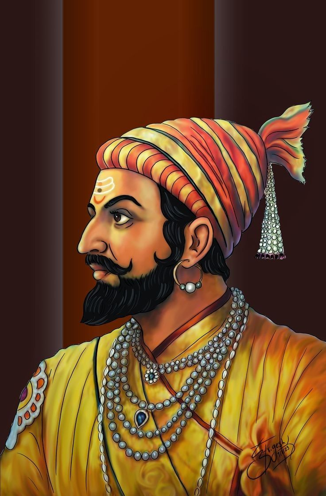
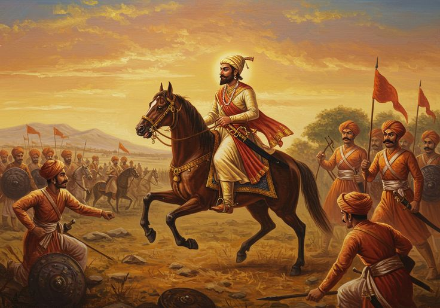
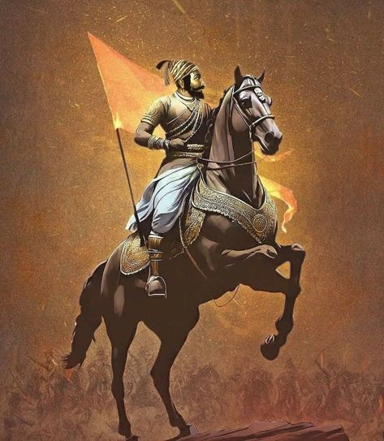
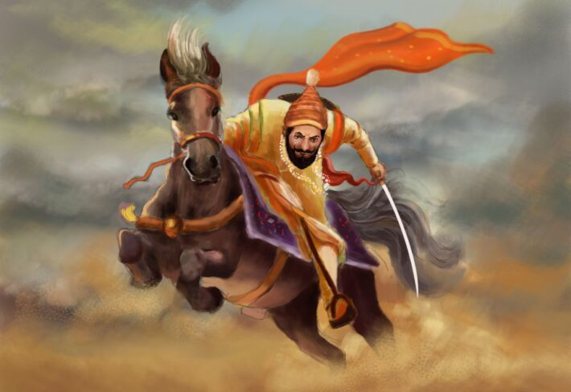
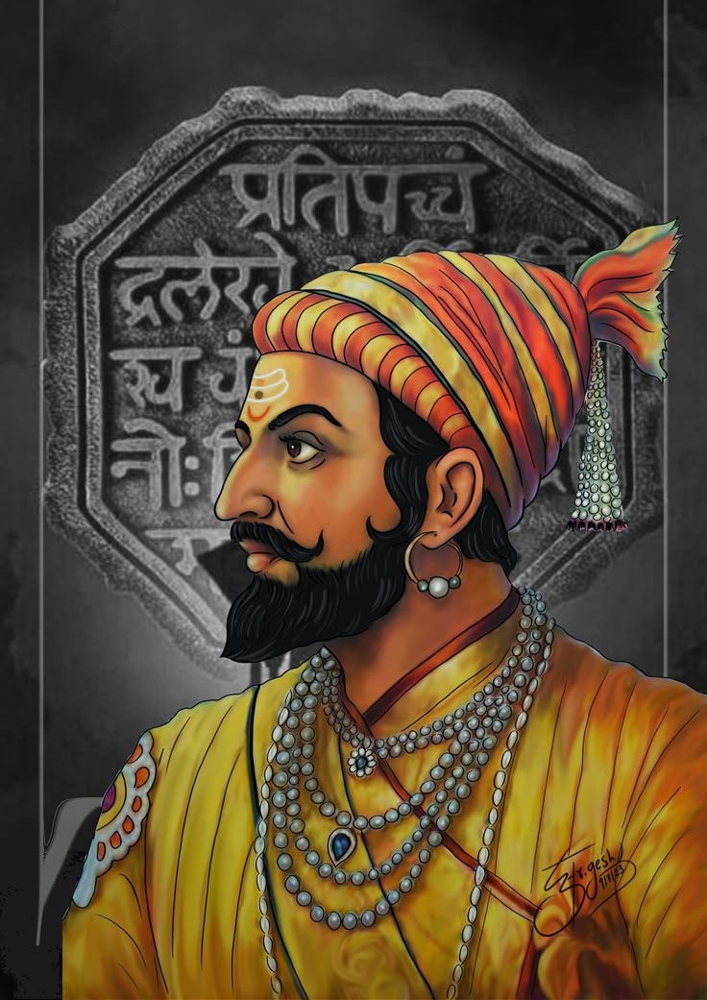

Who was Chhatrapati Shivaji Maharaj?

Chhatrapati Shivaji Maharaj (1630–1680) was the legendary founder of the Maratha Empire and one of India’s greatest warriors and administrators. He dedicated his life to establishing Hindavi Swarajya (self-rule) by challenging the oppressive rule of the Mughal Empire and the Deccan Sultanates. Known for his exceptional military strategies, courage, and visionary leadership, he built a strong and independent kingdom that laid the foundation for Maratha dominance in India. His governance was marked by justice, religious tolerance, and progressive policies that uplifted his people. Even centuries after his reign, he remains a symbol of bravery, patriotism, and good governance.
Early Life and Birth

Chhatrapati Shivaji Maharaj was born on February 19, 1630, at Shivneri Fort in present-day Maharashtra. His father, Shahaji Bhosale, was a respected general serving under the Deccan Sultanates, while his mother, Jijabai, was a deeply religious and visionary woman who played a crucial role in shaping his character. Since Shahaji was often away due to military campaigns, Jijabai raised Shivaji, instilling in him values of courage, justice, and leadership through stories of great Hindu warriors and epics. From a young age, he received training in warfare, administration, and diplomacy, developing a deep sense of duty toward his people. Growing up in the rugged terrain of Shivneri, he observed the hardships faced by the local population, which ignited his determination to establish an independent kingdom. This vision took its first step toward reality when, at just 15 years old, he captured Torna Fort, marking the beginning of his extraordinary journey.
Vision of Swarajya

Chhatrapati Shivaji Maharaj's vision of Swarajya (self-rule) was deeply rooted in the idea of creating an independent, just, and people-centric kingdom free from foreign oppression. He dreamt of a sovereign Hindu state where his subjects, irrespective of caste or religion, could live with dignity and security. Unlike the exploitative rule of the Mughals and Deccan Sultanates, Shivaji envisioned a governance system based on justice, equality, and efficient administration. He promoted local self-governance, strengthened the economy, and implemented policies that protected the rights of farmers, traders, and soldiers. His concept of Swarajya was not just about political independence but also about cultural revival, economic prosperity, and military strength, making the Marathas a formidable power in India. His relentless efforts and sacrifices in achieving this goal continue to inspire generations to fight for self-reliance and good governance.
Military Tactics & Guerrilla Warfare

Chhatrapati Shivaji Maharaj was a master strategist who revolutionized warfare with his innovative guerrilla tactics, often referred to as Ganimi Kava in Marathi. Understanding the strengths and weaknesses of his enemies, he used the rugged terrain of the Sahyadri mountains to his advantage, launching swift, surprise attacks on enemy forces and retreating before they could counterattack. This method allowed his smaller, agile forces to defeat much larger and well-equipped armies.
He also focused on fort warfare, capturing and strategically strengthening forts like Rajgad, Raigad, Pratapgad, and Sinhagad, which served as secure bases for his operations. His navy was another significant achievement, making the Marathas a dominant force along the Konkan coast and protecting their territories from foreign invaders like the Portuguese, Siddis, and the Mughals.
Shivaji’s military organization was highly disciplined, with strict codes of conduct ensuring that civilians were not harmed during raids. His emphasis on speed, intelligence gathering, and unconventional warfare helped him outmaneuver much larger forces, making him one of the most brilliant military leaders in Indian history. His strategies laid the foundation for Maratha dominance and were later adopted by many freedom fighters in India.
Legacy of Shivaji Maharaj

Chhatrapati Shivaji Maharaj’s legacy extends far beyond his lifetime, leaving an indelible mark on Indian history. He was not just a warrior but also a visionary ruler who laid the foundation for the Maratha Empire, which later became a dominant force in India. His ideals of Swarajya (self-rule), good governance, military strategy, and religious tolerance continue to inspire leaders and freedom fighters.
His administrative policies promoted justice, economic growth, and the welfare of his people, setting an example of ethical and efficient governance. His guerrilla warfare tactics influenced future military strategies and were even used by freedom fighters during India’s struggle for independence.
Shivaji Maharaj is revered as a symbol of bravery, patriotism, and resilience, especially in Maharashtra, where his forts, stories, and principles remain deeply respected. His birth anniversary, Shiv Jayanti, is celebrated with great pride, and his ideals continue to guide generations in the pursuit of self-reliance, courage, and leadership.